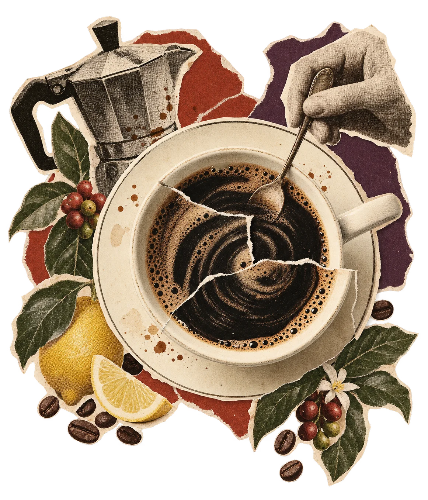
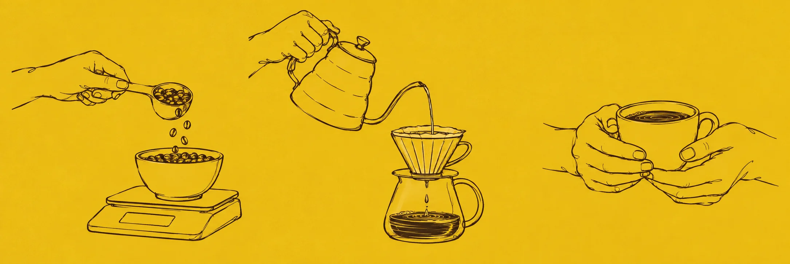

Daybreak
from ₹550Chocolatey. Round. Comforting.
Your familiar favourite, a little better.
Especially lovely with milk.

A favourite mug. A few unhurried minutes.
Good coffee, just the way you like it.
Start with what you like to taste.
We’ll take care of the coffee words.
Chocolatey. Round. Comforting.
Your familiar favourite, a little better.
Especially lovely with milk.
Caramel. Roasted nuts. Easygoing.
A mellow place to begin.
Happy black or with a little milk.
Citrus. Berries. A little unexpected.
For the curious cup.
Try it black to explore the fruit notes.
Those are tasting notes, not added flavours. Just roasted coffee in every bag.
Tell us three small things about your coffee.
We’ll find a good place to start.
A little pour-over recipe.
15 g coffee + 250 ml water

Rinse your paper filter with hot water and discard the rinse. Add 15 g of coffee ground for pour-over.
Wet the grounds with a little hot water. Wait 30 seconds, then pour slowly in circles until you reach 250 ml.
Let it drain and enjoy. Around 2½ minutes is a starting point. Taste, adjust, and find your own rhythm.
Starting recipe adapted from Hario’s V60 guide. Different brewers need different recipes.
The small details make
a better everyday.
No. These are roasted coffee beans, available whole or ground for your brewer. You’ll need a French press, pour-over, moka pot or espresso machine. Adding hot water directly won’t make the grounds dissolve.
Choose the brewer you use when you select your bag. We’ll match the grind to it. Choose whole bean only if you have a grinder. Our coffee finder can help you decide.
Find my coffeeChoose 250 g or 500 g. At 15 g per cup, that’s roughly 16 or 33 cups respectively. Your brewing recipe may use a different amount.
Our sample delivery policy covers India: ₹60 delivery, free on orders of ₹1,000 or more. Product prices include taxes. Allow 2–4 working days after dispatch.
This is a portfolio concept. Shipping, prices and fulfilment arrangements are illustrative; no real orders are accepted.
No. Every bag starts as a one-time purchase. You can choose repeat delivery every four weeks instead, with the amount shown before you continue. The proposed subscription can be paused or cancelled before the next dispatch.
The demo shows this choice; it does not create a subscription or schedule a charge.
Start with one bag. See where it takes you.